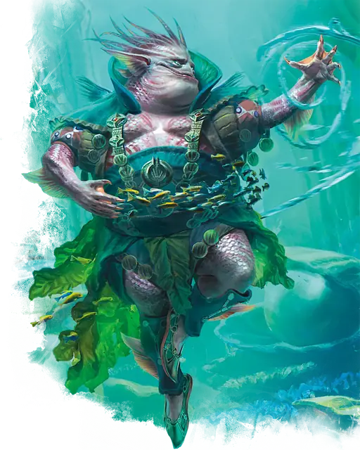

Марид
Marid
Большой Элементаль (Гений), Хаотичный Нейтральный

Класс Защиты 17 Инициатива +5 (15)
Хиты 229 (17к10 + 136)
Скорость 30 футов, Плавания 90 футов, Полёта 60 футов
| мод | спас | ||
|---|---|---|---|
| СИЛ | 22 | +6 | +6 |
| ЛОВ | 12 | +1 | +5 |
| ТЕЛ | 26 | +8 | +8 |
| мод | спас | ||
|---|---|---|---|
| ИНТ | 18 | +4 | +4 |
| МДР | 17 | +3 | +3 |
| ХАР | 18 | +4 | +8 |
Сопротивление урону Кислота, Холод, Электричество
Чувства Тёмное зрение 120 футов, пассивное Восприятие 13, Слепое зрение 30 футов
Языки Первичный (Акван)
Опасность 11 (7 200 опыта; БВ +4)
Особенности
Амфибия. Марид может дышать как воздухом, так и под водой.
Восстановление элементаля. Когда марид умирает за пределами Стихийного плана Воды, его тело превращается в морскую воду и спустя 1к4 дня заново возрождается со всеми Хитами где-то на плане Воды.
Желания. Мариду с 30-процентным шансом известно заклинание Желание. Если оно известно мариду, он может сотворить заклинание только от имени другого существа (кроме гениев), если то сообщит ему желание понятным для марида способом. Сотворение Желания таким образом не накладывает на марида негативные эффекты, указанные в последнем параграфе описания заклинания. После того, как марид сотворит это заклинание три раза, он не может сделать это снова, пока не истечёт 365 дней.
Действия
Мультиатака. Марид совершает три атаки Водяной плетью.
Водяная плеть. Бросок рукопашной атаки: +10, досягаемость 15 фт. Попадание: 15 (2к8 + 6) Рубящего урона плюс 9 (2к8) урона Холодом.
Струя воды. Спасбросок Ловкости: Сл 18, каждое существо в Линии длиной 60 футов и шириной 10 футов. Провал: 31 (9к6) урона Холодом. Если цель — существо Огромного размера или меньше, она отталкивается от марида на расстояние до 20 футов по прямой и Опрокидывается. Успех: Только половина урона.
Сотворение заклинаний. Марид сотворяет одно из следующих заклинаний, не нуждаясь в Материальных компонентах (заклинательная характеристика — Харизма, Сл спасброска заклинаний 16):
Неограниченно: Обнаружение добра и зла, Обнаружение магии, Очищение пищи и питья, Сотворение или уничтожение воды
1/день каждое: Власть над водами, Газообразная форма, Невидимость, Планарный переход, Языки
Бонусные действия
Вуаль тумана (Перезарядка 5–6). Марид сотворяет Туманное облако (заклинательная характеристика — та же, что для Сотворения заклинаний).
Бонус мастерства +4
Среда обитания Прибрежье, Под водой, Стихийный план Воды
Сокровища Реликварные
Марид
Гений воды
Мариды полнятся мощью морей; с её помощью они повелевают волнами и сотворяют воду из ничего. Эти гении обычно обитают в водоёмах или поблизости от них. Кроткие мариды селятся у родников, в оазисах и тихих заводях, а буйные — среди морских столбов-останцев, водоворотов и у коварных скалистых берегов. Облик маридов разнообразен: их тела с приметными плавниками и чешуёй переливаются оттенками волн. Мариды даруют свою силу и знание морей тем, кто защищает их водные владения или подносит им прелестные дары. Эти гении ценят редкие подводные сокровища: разноцветный жемчуг, инструменты из раковин и яства из дальних морей.
Родом мариды со Стихийного плана Воды, где обитают в дивных жилищах, дрейфующих по бескрайнему океану. Среди них есть Цитадель Десяти Тысяч Жемчужин — коралловая сфера, усеянная десятками купольных театров и библиотек, — и наполненный воздухом многолюдный Стеклянный Город.